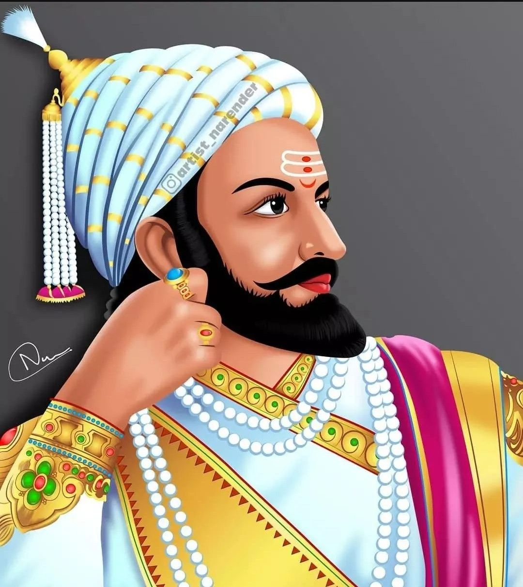

Chatrapati Shivaji Maharaj.
1630 - 1680
Chatrapati
Shivaji I (Shivaji Bhonsale; Marathi pronunciation:; c.19 February 1630 – 3 April 1680[5]), also referred to as Chhatrapati Shivaji Maharaj, was an Indian ruler and a member of the Bhonsle Maratha clan. He initially served as the Jagirdar of Pune after 1664 succeeding his father Shahaji. [6] Eventually, Shivaji carved out his own independent kingdom from the declining Adilshahi sultanate of Bijapur which formed the genesis of the Maratha Empire. In 1674, he was formally crowned the Chhatrapati of his realm at Raigad Fort. k
Biographies
- Military: Shivaji demonstrated great skill in creating his military organisation, which lasted until the demise of the Maratha Empire. His strategy rested on leveraging his ground forces, naval forces, and series of forts across his territory. The Maval infantry served as the core of his ground forces (reinforced with Telangi musketeers from Karnataka), supported by Maratha cavalry. His artillery was relatively underdeveloped and reliant on European suppliers, further inclining him to a very mobile form of warfare
- Father of Indian Navy: Shivaji realized the importance of naval force in its early stages and built a powerful navy. He believed that it would help him keep foreign invaders-- Dutch, Portuguese and British-- and pirates at bay. Shivaji Maharaj built naval forts at Jaigarh, Vijaydurg, Sindhudurg and many other places and even had four different types of warships including Manjuhasm Pals, Gurabs and Gallibats. He is known as the father of the Indian Navy.
- Hill forts: Suvela Machi, view of southern sub-plateaux, as seen from Ballekilla, Rajgad Main article: Shivaji's forts Hill forts played a key role in Shivaji's strategy. He captured important forts at Murambdev (Rajgad), Torna, Kondhana (Sinhagad) and Purandar. He also rebuilt or repaired many forts in advantageous locations.[163] In addition, Shivaji built a number of forts; the number "111" is reported in some accounts, but it is likely the actual number "did not exceed 18."[164] The historian Jadunath Sarkar assessed that Shivaji owned some 240–280 forts at the time of his death.[165] Each was placed under three officers of equal status, lest a single traitor be bribed or tempted to deliver it to the enemy. The officers acted jointly and provided mutual checks and balance.
-
Attacks on Shaista Khan and Surat
Main articles:
A 20th century depiction of Shivaji's surprise attack on Mughal general Shaista Khan in Pune by M.V. Dhurandhar Upon the request of Badi Begum of Bijapur, Aurangzeb, now the Mughal emperor, sent his maternal uncle Shaista Khan, with an army numbering over 150,000 along with a powerful artillery division in January 1660 to attack Shivaji in conjunction with Bijapur's army led by Siddi Jauhar. Shaista Khan, with his better equipped and well provisioned army of 80,000 seized Pune. He also took the nearby fort of Chakan, besieging it for a month and a half before breaching the walls.[60] Shaista Khan pressed his advantage of having a larger, better provisioned and heavily armed Mughal army and made inroads into some of the Maratha territory, seizing the city of Pune and establishing his residence at Shivaji's palace of Lal Mahal.[61] On the night of 5 April 1663, Shivaji led a daring night attack on Shaista Khan's camp. [62] He, along with his 400 men, attacked Shaista Khan's mansion, broke into Khan's bedroom and wounded him. Khan lost three fingers. [63] In the scuffle, Shaista Khan's son, several of his wives, servants and soldiers were killed.[64] The Khan took refuge with the Mughal forces outside of Pune, and Aurangzeb punished him for this embarrassment with a transfer to Bengal.[65] In retaliation for Shaista Khan's attacks, and to replenish his now-depleted treasury, in 1664 Shivaji sacked the port city of Surat, a wealthy Mughal trading centre.[66] On 13 February 1665, he also conducted a naval raid on the Portuguese held Basrur in present day Karnataka, and gained a large booty - shivaji Maharaj respects all religions.
-
Died :
3 April 1680